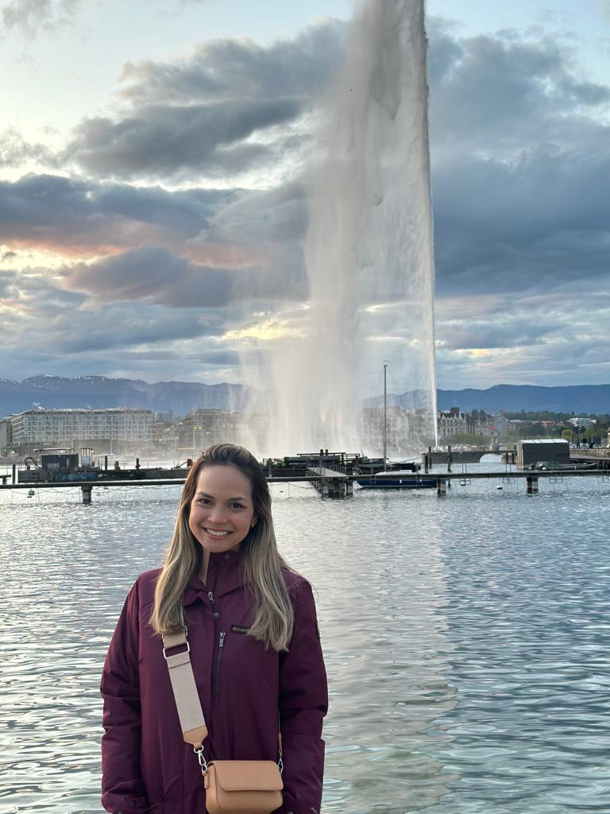

Ingeniera Lilian Ayala Luque
Graduada de la Universidad Tecnológica de Panamá, en la carrera de Ingeniería Ambiental, cuenta con 6 años de experiencia en el campo de Gestión de Residuos Sólidos Urbanos. Actualmente labora en la Federación Internacional de la Cruz Roja y Media Luna Roja (IFRC) en temas de Acción Anticipatoria, Cambio Climático y Sostenibilidad Ambiental. Es docente en la Universidad Tecnológica de Panamá, dictando cursos a nivel de Pregrado, en las áreas de Sistemas Ambientales y Desechos Sólidos.
En el ámbito educativo cuenta con una Maestría en Tecnología Ambiental y Sostenibilidad de New York Institute of Technology, como becaria Fulbright-SENACYT.